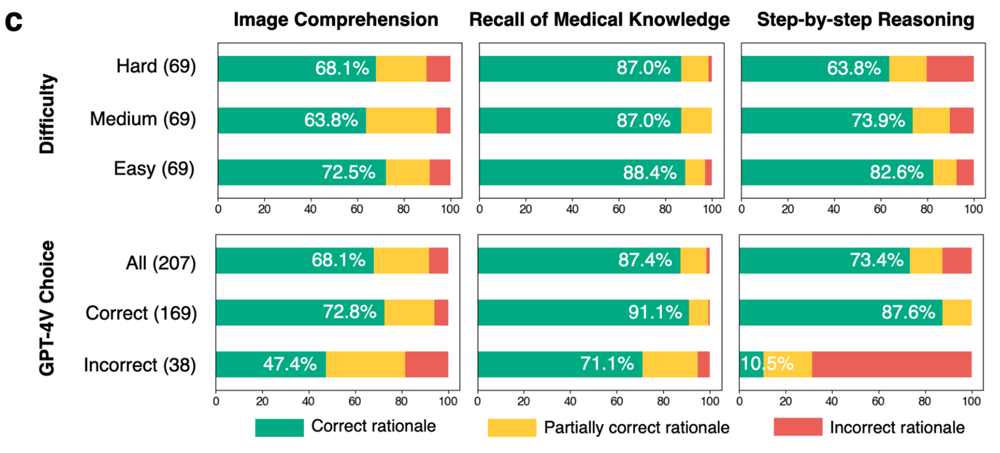
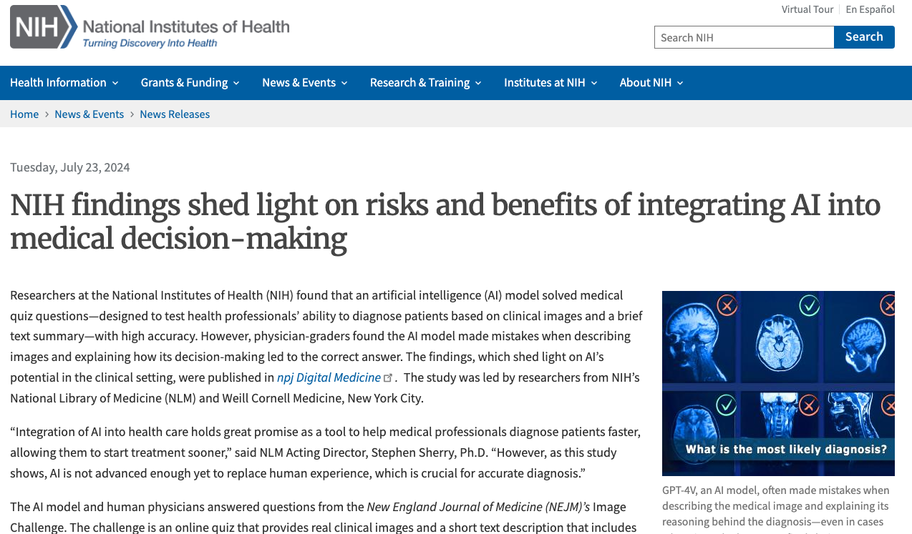

Medical AI Evaluation · Multimodal Reasoning
Hidden Flaws Behind Expert-Level Accuracy of Multimodal GPT-4 Vision in Medicine
Qiao Jin, Fangyuan Chen, Yiliang Zhou, Ziyang Xu, Justin M. Cheung, …, Michael F. Chiang, Yifan Peng, Zhiyong Lu
npj Digit. Med. 2024
These slides were generated with the help of AI and may contain errors.
01Motivation
High accuracy can hide broken reasoning
- GPT-4V scores at expert level on medical image quizzes.
- But a multiple-choice score says nothing about how it reached the answer.
- A model can be right for the wrong reasons — dangerous in medicine.
02Study overview
Correct answers can hide flawed rationales
- 207 NEJM challenges
- GPT-4V
-
Structured responseImage comprehensionRecall of medical knowledgeStep-by-step reasoningFinal choice
- Physician review9 physicians
Answer accuracy
Closed-book; difference not significant.
Among 169 correct GPT-4V answers
Any rationale flaw
Image comprehension27.2%
Recall of medical knowledge8.9%
Step-by-step reasoning12.4%
Capability flaws can overlap.
03Result
Right answers, wrong reasons
- GPT-4V matches physicians on accuracy — 81.6% vs. 77.8%.
- But even when its answer is correct, image comprehension is right only 72.8% of the time.
- Knowledge recall is most reliable (91.1%); reasoning collapses when the answer is wrong (10.5%).

04Recognition
Reported by NIH
- Featured in an NIH News release — the National Library of Medicine highlighted the study’s findings on integrating AI into medical decision-making.

05Summary
Hidden Flaws at a glance
| Background | GPT-4V reaches expert-level scores on medical image quizzes. |
| Problem | But a multiple-choice score can’t reveal whether the reasoning is sound. |
| Approach | Nine physicians graded GPT-4V rationales on 207 NEJM Image Challenges — image comprehension, knowledge recall & reasoning. |
| Results | Accuracy matches physicians (81.6% vs. 77.8%), yet 35.5% of correct answers rest on flawed rationales — mostly image misreading. |
| Conclusion | Evaluate the reasoning, not just the answer, before deploying multimodal AI in medicine. |